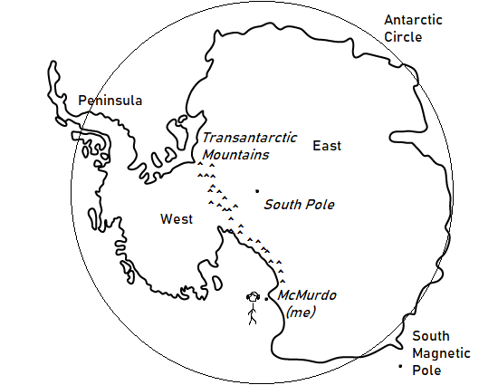
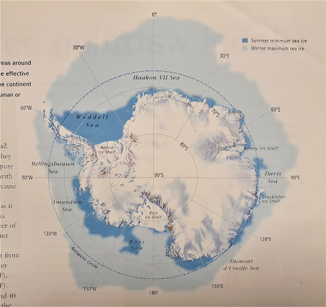
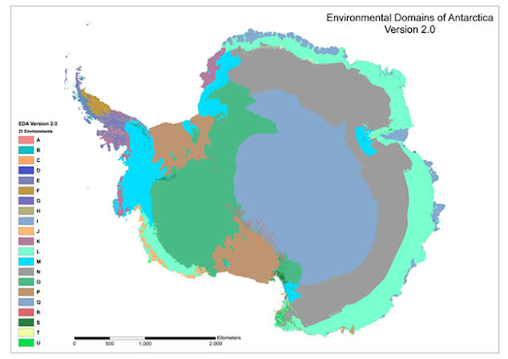
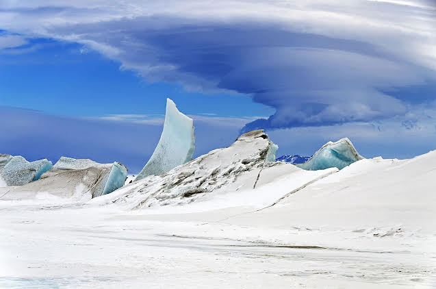
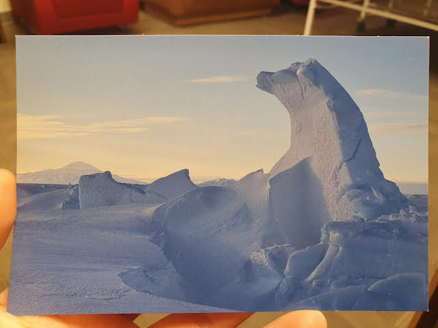

Longren Antarctic Newsletter #02 - 14.11.2022 ------------------------------ Dearest people,Welcome to: geography and geology of the ice (aka - all things maps and ice). Forewarning, there will be an extensive use of maps within this one. For transparency, a majority of information here came from Wikipedia and a book titled The Complete Encyclopedia: Antarctica and the Arctic, by McGonigal and Woodworth. Geography Considering that the continent is larger than all of Europe, a lot of information can be displayed on a single map of Antarctica. Below, I've illustrated just a few key points on a tailor-made map of the area.  Antarctic map with geography talking-points. Excuse the subpar map making, this is after all a budget newsletter. Nevertheless, let's talk about this fascinating continent. Starting on the outside and moving in: a majority, though not all, of Antarctica is below the Antarctic circle. There are many islands off the coast with wildlife aplenty. Interestingly, there are also phantom islands, or islands that have previously appeared on navigation charts, but are now known to not exist. Better to be cautious and leave it on the map, rather than letting someone run into the rocky outcrop with their boat. Once the temperature gets low enough the further south one goes, the top layer of the water begins to freeze, creating sea ice.  Sea ice extent in winter compared to summer (D. McGonigal and L. Woodworth). Moving further inward, the continent is split into a west (pointing towards the Americas) and an east (pointing towards Asia), separated by the transantarctic mountains. Upon arriving at the South Pole, all directions naturally point north. Compass directions truly become impossible as one navigates near the poles. The South Pole, a geographic pole, marks where upon the Earth it is rotating. Or, on a map, where all lines of longitude intersect. There is also another pole: the magnetic pole. Off the south-east coast of Antarctica, the magnetic pole is one of two points on Earth where geomagnetic lines end, so to speak (there is also an additional geomagnetic pole between the magnetic and geographic poles, but I won't get into that). The magnetic pole shifts over time as the internal structure of the Earth changes. Speculation of what lies in the Antarctic (Dutch cartographer Jan Janssonius, 1657). A side note on the etymology of Antarctica: its origin comes from Antarcticus, derived from the Greek ἀντι- ('anti-') and ἀρκτικός ('of the Bear', 'northern'). Here, Bear refers to either the constellation Ursa Major or Ursa Minor ("Big Bear/Little Bear"), which are both found in the northern sky. Geology  Environmental domains (Morgan F. et al., 2007). While thinking about how I would write this specific newsletter, I was planning to take a deep dive into the many various types of terrain that span the Antarctic continent. However, I realize now that that would not due justice to much of the beauty that is found here. Thus, I want to focus on one specific feature that occurs right on the coastline: pressure ridges. In the future, we may return to an extended description of the Antarctic environment.  Pressure ridges near Scott Base (M. Studinger). In the case of ice, pressure ridges are when two sections of ice converge and fragments of ice are pushed into upwards and accumulate. In the case of where I am living, these ridges are common at the area where the ice shelf meets the land. We call this spot "the transition". The ice road here requires frequent maintenance as the terrain is ever changing. To get from the station to the airfield, we cross the transition next to Scott Base, viewing the penguins and seals that reside around the ridges.  A postcard depicting the pressure ridges near Scott Base (K. McDonald). My week Man, adjusting to life around here has been a trip. I mainly say that because everything has just become the new normal now. A lot of presumptions I had about this place were correct, while others were just plain wrong. It actually has been overwhelming to think about this sudden shift in lifestyle over the last month and try to put it into words, but a few examples might do the trick. Something I had previously thought that turned out to be quite incorrect was my expectation of clothing and recreation. With the extreme temperatures, I was thinking there would be some kind of system to be followed to ensure you were safe and all. However, if you're in town, you can do whatever you'd like when it comes to clothes. I've seen people walking between buildings in shorts and sandals. And once, I hiked nearby observation hill with a colleague who wore socks and sandals the entire way up. Granted, if you leave town, it's required to bring extreme weather gear in the case that the weather turns poor. But otherwise, feel free to run around town in a pair of booty shorts. The cold has just become a normal part of life. What I found out to be correct, though, was this: the people here are hella interesting. It seems like everyone you talk to here has some crazy story. From a janitor who hold a doctorate, to a wastey who has traveled for months at a time living out of dumpsters, to a science technician marking her 20-something-th season on ice, the stories are neverending. A common trait between all of us here is a sense of unrestrained adventure. Sharing this small town with this kind of people has been special. And that's all for this one! I'll leave you with a nice poem I found. And now there came both mist and snow,
Samuel Taylor Coleridge (1772-1834) Dearly, Luke ------------------------------ ------------------------------ If you think that someone would be interested in learning about the Antarctic and what working there is like, please do forward this letter to them. If you would like to be removed from this newsletter, just email me and I can do so. Lastly, if you have any questions about life, work, or anything else regarding Antarctica, send me an email and I can try to answer your question in the next letter. Thank you! |